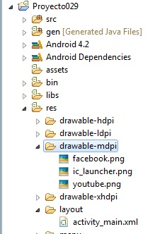

Otra posibilidad es disponer gráficos dentro de los MenuItem de nuestro programa.
Problema:
Confeccionar una aplicación que muestre un menú con dos opciones: una que active el navegador con YouTube y otra que active Facebook. Disponer un ícono para cada MenuItem.
Luego de crear el proyecto procedemos a buscar dos íconos representativos de Youtube y Facebook (dos archivos png de 48 píxeles de ancho y alto) y los almacenamos en la carpeta drawable-mdpi.
Luego de refrescar la carpeta debemos tener en nuestro proyecto en dicha carpeta tres archivos:
Ahora tenemos que crear los dos Item y especificar las propiedades Title (con el texto que queremos que se muestre) y la propiedad Icon.
Para configurar cada icon procedemos a asignar los valores @drawable/youtube y @drawable/facebook (los nombres coinciden con los nombres de archivos que copiamos a la carpeta drawable)
Nos queda agregar solo la funcionalidad de cada MenuItem:
package com.androidya.proyecto029;
import android.app.Activity;
import android.content.Intent;
import android.net.Uri;
import android.os.Bundle;
import android.view.Menu;
import android.view.MenuItem;
public class MainActivity extends Activity {
@Override
protected void onCreate(Bundle savedInstanceState) {
super.onCreate(savedInstanceState);
setContentView(R.layout.activity_main);
}
@Override
public boolean onCreateOptionsMenu(Menu menu) {
// Inflate the menu; this adds items to the action bar if it is present.
getMenuInflater().inflate(R.menu.activity_main, menu);
return true;
}
@Override
public boolean onOptionsItemSelected(MenuItem item) {
Intent i;
switch (item.getItemId()) {
case R.id.item1:
i = new Intent("android.intent.action.VIEW",
Uri.parse("http://www.youtube.com"));
startActivity(i);
break;
case R.id.item2:
i = new Intent("android.intent.action.VIEW",
Uri.parse("http://www.facebook.com"));
startActivity(i);
}
return true;
}
}
Luego cuando lo ejecutamos podemos observar el ícono que se muestra en cada MenuItem:

Este proyecto lo puede descargar en un zip desde este enlace: proyecto029.zip